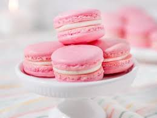

About Me
My name is Izabelle. I was born and raised in Shelley, Idaho. I am currently getting a Bachelors in Cyber Security. I love to bake and snowboard. These are some helpful Web Dev Resources:
Some of my favorite recipes
Here are some of my favorite recipes that I love to make! From delicate French macarons to creamy crème brûlée, these dishes are sure to impress!
